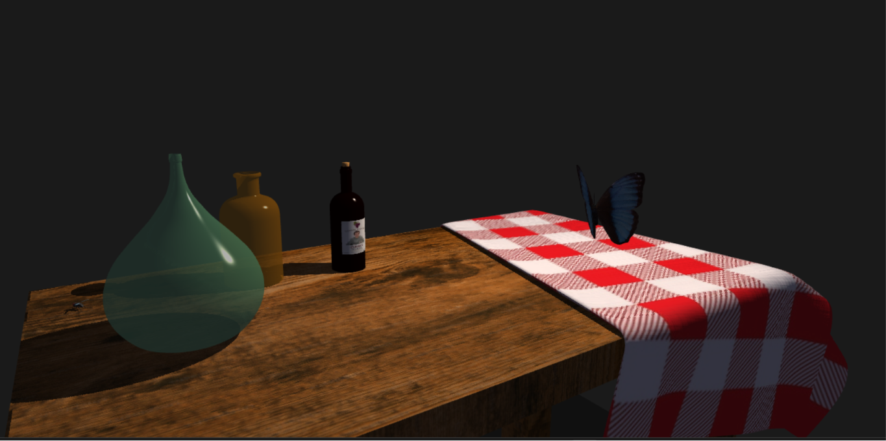
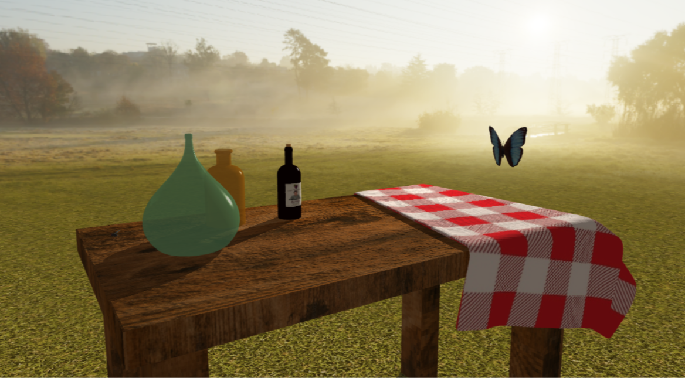
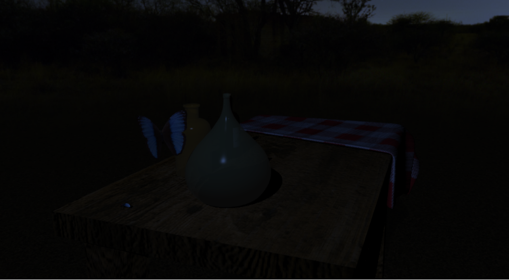
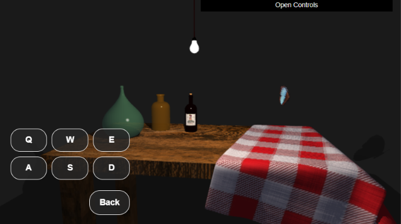

Nome: [Il tuo Nome]
Cognome: [Il tuo Cognome]
Matricola: [La tua Matricola]
L'applicazione sviluppata è una 3D-WebApp interattiva sviluppata in JavaScript e WebGL. Il progetto si concentra sulla realizzazione di una scena tridimensionale ispirata al concetto di Natura Morta, noto genere pittorico che ritrae oggetti inanimati di uso quotidiano. La composizione presenta un tavolo con alcuni oggetti appoggiati: un fiasco, un bottiglione, una bottiglia di vino e una tovaglia scozzese piegata.
L'atmosfera puramente statica della composizione viene spezzata dall'inserimento dinamico di due insetti animati (una mosca e una farfalla) che introducono movimento e vitalità all'interno dell'ambiente geometrico. L'intera scena è interamente fruibile in tempo reale attraverso una visualizzazione in proiezione prospettica che garantisce il corretto senso di profondità e proporzione spaziale.

Tutti i modelli tridimensionali presenti nella scena sono
mesh poligonali caricate dinamicamente a partire da file
in formato .obj (Wavefront). Quasi tutte le mesh
presenti sono state modellate da zero utilizzando Blender,
software con il quale è stata gestita anche
tutta la fase di UV mapping.
Per l'importazione e la gestione applicativa di queste
geometrie, il progetto fa affidamento sulle librerie messe
a disposizione durante il corso: in particolare
glm_utils.js per il parsing testuale dei file OBJ,
e webgl-utils.js per la creazione efficiente dei
buffer di memoria associati.
L'integrazione delle mesh
avviene tramite la funzione
loadMeshWithGLM che, appoggiandosi al parser,
estrae i dati poligonali e prepara in parallelo i buffer per
le posizioni, le coordinate texture e due set distinti di normali
(normali di vertice e normali di faccia), fondamentali per supportare
dinamicamente le diverse tecniche di shading previste dall'applicazione.
Il realismo visivo è garantito da un approccio misto al texture mapping. Alcuni modelli, come gli elementi in vetro colorato, utilizzano texture monocromatiche generate direttamente via software a runtime. Per i restanti oggetti della scena sono state impiegate texture basate su file immagine. Infine, per soddisfare il requisito relativo alla firma dell'autore, la foto personale è stata integrata all'interno della texture dell'etichetta, applicata sulla superficie frontale della bottiglia di vino.
Per differenziarsi dalla staticità della composizione, le animazioni degli insetti (mosca e farfalla) sono calcolate matematicamente istante per istante secondo funzioni trigonometriche sul tempo virtuale.
L'animazione della mosca opera su coordinate
locali con le ali che oscillano sull'asse X seguendo un'onda
triangolare.
Successivamente, l'intero modello viene posizionato e orientato in un punto
fisso della scena tramite la matrice globale flyBaseMatrix, mantenendo
il movimento delle ali ancorato al corpo.
La farfalla esegue invece un comportamento cinematico globale combinato: le sue ali battono compiendo ampie rotazioni sull'asse Y (fino a 90 gradi), mentre il corpo si muove nello spazio seguendo un'orbita tridimensionale parametrica complessa definita da funzioni sinusoidali:
X = 5 * cos(t), Y = 3 + 0.5 * sin(6 * t), Z = 8 * sin(t)
Per far sì che l'insetto guardi realisticamente in avanti durante il volo, l'angolo di imbardata viene calcolato dinamicamente estraendo l'arcotangente goniometrica sul vettore tangente complanare XZ della traiettoria matematica.
Il fulcro tecnico del progetto risiede nei moduli shader in linguaggio GLSL, strutturati per implementare contemporaneamente più tecniche avanzate di rendering.
Il motore di rendering implementa il modello di illuminazione di
Phong. Come previsto da questo modello matematico, gli oggetti
nella scena presentano comportamenti ottici differenziati grazie alla
definizione di diversi materiali (legno, vetro, tessuto) ai quali sono associati
coefficienti specifici per la riflessione ambientale K_a, diffusa (K_d),
speculare K_s e per l'esponente di lucentezza (shininess):
Il sistema supporta simultaneamente sia lo shading Smooth che lo shading Flat.
A livello architetturale, la funzione di parsing degli OBJ
pre-calcola sempre due set di normali: a_normal (mediata per avere
superfici lisce) e a_flatNormal (identica per tutti i
vertici di una stessa faccia).
Il Vertex Shader riceve entrambi gli attributi, li moltiplica per
la matrice u_worldInverseTranspose per portarli nel corretto
spazio del mondo, e li passa al Fragment Shader come variabili
varying. All'interno del Fragment Shader, una variabile
uniforme booleana (u_useFlatShading, controllabile tramite
la GUI utente) agisce da switch logico e permette di decidere istantaneamente
quale dei due vettoriutilizzare nel calcolo del
prodotto scalare per ricavare la componente iffusa di Lambert e la
componente Speculare, applicandola alle proprietà del materiale attivo.
Lo sfondo della scena è gestito tramite skybox caricate dal
file skybox.js tramite la routine
loadCubemapFromCross. Questa funzione accetta una
singola texture con layout a "croce orizzontale" (griglia 4x3),
utilizzando un canvas 2D nascosto per ritagliare e
inviare a WebGL le sei facce della cubemap. L'applicazione consente
di scegliere tra più skybox differenti (diurna o notturna) o di disattivare completamente lo sfondo,
lasciando la scena immersa nel buio.
Per evitare che il tavolo e gli oggetti sembrino fluttuare nel
vuoto dello sfondo, è stato introdotto un ampio piano poligonale
che funge da pavimento, la cui texture viene campionata applicando
un moltiplicatore di scala alle coordinate UV nel Vertex Shader per
eseguire un tiling fitto ed evitarne la sgranatura.
Affinché il terreno si fonda in maniera naturale con l'orizzonte della
skybox, nel Fragment Shader del pavimento è stato implementato
un effetto nebbia basato sulla distanza euclidea dalla telecamera.
Utilizzando la funzione smoothstep, viene calcolato un
fattore di interpolazione che miscela linearmente la texture del prato
con il colore campionato dalla skybox, dissolvendo dolcemente la geometria all'orizzonte.


Il rendering del vetro trasparente (fiasco e bottiglione) è gestito mediante il cosiddetto Algoritmo del Pittore: ad ogni frame viene ricalcolata la distanza euclidea tra il centro di ciascuna geometria in vetro e la posizione attuale della telecamera e sulla base di questa distanza, l'array degli oggetti trasparenti da renderizzare viene ordinato in senso decrescente. In questo modo, WebGL disegnerà sempre per primo l'oggetto fisicamente più lontano dal punto di vista dell'utente, assicurando un blending visivamente corretto da qualsiasi prospettiva ci si sposti.
Subito dopo l'ordinamento spaziale, ogni oggetto trasparente viene
disegnato due volte: prima con il culling frontale
(gl.cullFace(gl.FRONT)) per renderizzare il retro interno
del vetro, e subito dopo con il culling posteriore
(gl.cullFace(gl.BACK)) per sovrapporre la parete
anteriore applicando la trasparenza.
L'applicazione gestisce un duplice sistema di ombre in tempo reale, in risposta ad una precisa esigenza di ottimizzazione delle risorse di rendering:
WEBGL_depth_texture, la scena viene pre-renderizzata
generando una mappa di profondità ad alta risoluzione. Poiché la texture di profondità ha
una dimensione finita (4096px), il frustum della camera di luce viene concentrato ed
esteso unicamente nell'area circoscritta del tavolo. In questo modo si evita di sprecare
risoluzione sulla vasta area del pavimento infinito, massimizzando la precisione dell'ombra
e dei dettagli degli oggetti appoggiati sul tavolo (i quali possono così proiettare ombre
più definite e farsi ombra a vicenda).
Per prevenire artefatti visivi (shadow acne), il depth bias
non viene calcolato manualmente nello shader, ma è gestito nativamente via hardware
applicando un Polygon Offset durante la fase di generazione della mappa.
gl.stencilFunc(gl.EQUAL, 0, 0xFF);
Disegna l'ombra planare solo se lo stencil in quel punto è 0.gl.stencilOp(gl.KEEP, gl.KEEP, gl.INCR);
Incrementa il valore dello stencil a 1 non appena il primo pixel d'ombra viene disegnato.Il bump mapping è una tecnica che permette di simulare la rugosità superficiale perturbando le normali usate nel calcolo dell'illuminazione, senza modificare la geometria reale. Nel progetto questa tecnica è stata implementata per aumentare il realismo del tessuto della tovaglia scozzese e del materiale ligneo del tavolo.
Nel Fragment Shader, lo spazio tangente viene costruito a partire dalla normale e dal
vettore tangente pre-calcolato e interpolato dalla geometria.
Ottenuto il piano locale, lo shader adotta il metodo delle differenze centrali: campiona la bump map (con filtro
NEAREST per maggiore stabilità) in quattro punti adiacenti per estrarre un
gradiente di altezza simmetrico. Questo gradiente perturba la normale prima
dell'illuminazione Phong per creare l'illusione del rilievo, utilizzando parametri di
intensità e scala calibrati ad hoc per il tavolo e la tovaglia.
L'applicazione consente di manipolare dinamicamente l'ambiente 3D e le sue luci attraverso funzionalità progettate per essere accessibili in modo fluido da diverse tipologie di dispositivi.
L'utente può variare dinamicamente lo scenario di sfondo passando da una skybox diurna ad una notturna. Quando si seleziona l'opzione "Nessuna Skybox", l'illuminazione è affidata unicamente ad una lampadina virtuale tridimensionale che l'utente può pilotare nello spazio, aggiornando interattivamente e in tempo reale la direzione dei vettori luce, la proiezione delle ombre e i riflessi sui vari oggetti.
Su desktop, la rotazione orbitale della telecamera avviene trascinando
il mouse col tasto sinistro e lo zoom tramite la rotellina.
La lampadina si sposta nello spazio con i tasti W, A, S, D, Q, E,
mentre le scorciatoie veloci P e B servono,
rispettivamente, a mettere in pausa le animazioni e a cambiare lo
scenario in tempo reale.
Sui dispositivi touch, la rotazione orbitale della camera viene gestita tramite swipe a singolo dito, mentre lo zoom sfrutta una gesture nativa di Pinch-to-Zoom (calcolando la variazione di distanza euclidea tra due tocchi simultanei).
Per compensare l'assenza della tastiera fisica, l'applicazione integra un overlay HTML/CSS sovrapposto al canvas. Questo pannello offre pulsanti touch dedicati per la pausa ("Pause") e il ciclo degli scenari ("Change Skybox"). Inoltre, attivando il comando "Move Light", compare a schermo una tastiera virtuale che permette un controllo immediato per il posizionamento spaziale della lampadina.

L'interfaccia di controllo avanzato è gestita dalla
libreria dat.gui ed è disponibile sia su desktop che su
dispositivi mobile. Qui sono presenti impostazioni della scena
organizzati in comode cartelle espandibili: calibrazione geometrica del frustum
della telecamera, slider per regolare la velocità delle ali degli insetti,
toggle per abilitare/disabilitare tecniche di rendering
avanzate come ombre e bump mapping.
Il software dell'applicazione è suddiviso in moduli logici per favorire l'ordine e l'isolamento delle funzioni:
still_life.html: Contiene gli script
dedicati agli Shaders (Vertex e Fragment) scritti in linguaggio GLSL,
oltre all'interfaccia utente mobile.still_life.js: Il motore principale dell'applicazione.
Gestisce il setup del contesto WebGL, l'inizializzazione dei
Framebuffers, il caricamento delle texture e coordina l'esecuzione del
loop di rendering principale.loader.js: Raggruppa tutte le funzioni di caricamento
asincrono e pre-elaborazione degli asset, compreso il parsing dei
file OBJ (loadMeshWithGLM), la creazione delle texture 2D e
la gestione delle texture di bump in formato LUMINANCE.input.js: Raccoglie tutti i listener degli eventi
di sistema per isolare la gestione di tastiera, mouse ed eventi touch.animation.js: Contiene esclusivamente le equazioni
e le trasformazioni di matrice legate alla cinematica dei modelli animati.gui.js: Configura le cartelle, i controlli e i
valori di default legati all'interfaccia dat.gui.skybox.js: Gestisce le routine matematiche e grafiche
per la generazione delle geometrie di sfondo e l'estrazione delle cubemap.